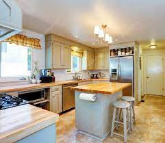
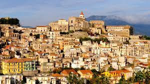

Le case in italiano sono spesso più piccole, poi americano casas. Gli italiani tendono a vivere in ville o
appartamenti più piccoli rispetto agli americani che vivono in case con quartieri in stile suburbano. Poiché
queste case sono più piccole, le loro cucine saranno più piccole e non avranno cose come una lavanderia o un
garage.

